The physics of the Roadster wall-flip simulation
Report on sim/wall_flip_sim.py, written 2026-10-17. Every number on this page comes from the code, from a run of it, or from
PROJECT.html. Code links go to the file on GitHub, by line. Other pages: videos,
3D replay, development journey.
The problem. On 2026-10-15 a Tesla Roadster drove up a curved wall, rode a 170° overhang upside down, let go, rolled upright in the air and landed on cold-gas thrusters. No source publishes the wall size, the car mass or the thrust. The broadcast shows only a few gauges: pitch, altitude, downforce and G. This page shows how the simulation turns those gauge readings and a few press facts into a complete, checkable physical model.
How to read it. Part 1 derives each equation from first principles. After each derivation, a teal box says the same thing in plain words and names the code line. Part 2 lists every number, with its status. Part 3 compares the result with the HUD and lists what the model cannot show. Part 4 analyses the flip itself: the release from the ceiling and the half-roll, with one model for all forces.
Status tags used in Part 2: measured read from the video; published stated by Tesla or the press; derived calculated from other numbers; est. an estimate (an assumption).
Part 1: the theory
0. Setting: clocks, axes, symbols
Clock. All times are seconds on the VideoFromSpace clock (eqOfmtTJD1A). The PCMag clip runs
61.35 s later: PCMag time = sim time + 61.35 s. The header of data/hud_wall_flip.csv still says 61.0 s. That
value is old. The gauge readings corrected it to 61.35 s on 2026-10-16.
World axes. \(x\) is horizontal, along the wall's plane. \(x = 0\) is the foot of the curve. The car starts at negative \(x\), climbs toward positive \(x\), and the overhang carries it back over negative \(x\). \(y\) points to the side, and \(z\) points up. The flight model keeps the car in the plane \(y = 0\) (see Known limits).
Body axes. \(x_b\) points forward, \(y_b\) left and \(z_b\) up, from the car's centre of gravity (CG). The rotation matrix \(R\) takes a body vector into world axes: \(\mathbf{v}_{\text{world}} = R\,\mathbf{v}_b\).
Altitude. The HUD ALTITUDE is the CG height above its height when parked. The sim stores the CG at \(z = h + h_{cg}\), with \(h_{cg} = 0.45\) m.
| Symbol | Meaning | Unit |
|---|---|---|
| \(m\) | Car mass: dry mass plus the gas left in the tank | kg |
| \(g_0\) | Standard gravity, 9.80665 | m/s² |
| \(\mathbf{g}\) | Gravity vector \((0, 0, -g_0)\) | m/s² |
| \(s\) | Distance travelled along the wall (track length) | m |
| \(\theta\) | Pitch: angle of the track to the horizontal (0° road, 90° vertical, 170° ceiling) | rad |
| \(h\) | HUD altitude of the CG | m (HUD shows ft; 1 ft = 0.3048 m) |
| \(\kappa\) | Curvature of the track, \(d\theta/ds\) | 1/m |
| \(\mathbf{p}, \mathbf{v}\) | CG position and velocity, world axes | m, m/s |
| \(q, R\) | Attitude as a unit quaternion and as a rotation matrix | — |
| \(\boldsymbol{\omega}\) | Angular velocity, body axes | rad/s |
| \(I\) | Inertia tensor, body axes, diagonal | kg·m² |
| \(P, T, v\) | Tank gas pressure, temperature, specific volume \(V/m_{gas}\) | Pa, K, m³/kg |
| \(f_i\) | Thrust of nozzle \(i\), \(i = 1 \dots 10\) | N |
1. Rebuilding the wall from the HUD
No source gives the wall dimensions. During the first, slow climb (0:05.5–0:27 in VideoFromSpace), the HUD shows PITCH \(\theta\) and ALTITUDE \(h\). These two gauges are enough to rebuild the shape of the CG path.
Step 1: the slope relation. Let the car move a short distance \(ds\) along the track at pitch \(\theta\). The CG then rises \(dh = \sin\theta\,ds\) and moves \(dx = \cos\theta\,ds\) sideways. Divide the two to remove \(ds\):
$$\frac{dx}{dh} = \frac{\cos\theta}{\sin\theta} \quad\Longrightarrow\quad x(\theta) = \int \frac{dh}{\tan\theta} \approx \sum_k \frac{\Delta h_k}{\tan\bar\theta_k}$$Here \(\bar\theta_k\) is the mid-point pitch of step \(k\). The code steps \(\theta\) from 0° to 170° in 0.1° steps.
Step 2: the entry curve. Near \(\theta = 0\), \(\tan\theta \to 0\). A 0.1 ft read error in \(h\) then gives a large error in \(x\). So the code drops readings below 20° and uses a circle there. A circle of radius \(R\) that starts flat on the road has \(h = R(1-\cos\theta)\). The least-squares radius minimises \(\sum_i \left[h_i - R(1-\cos\theta_i)\right]^2\). Set the derivative with respect to \(R\) to zero:
$$R = \frac{\sum_i h_i\,(1-\cos\theta_i)}{\sum_i (1-\cos\theta_i)^2}$$The sum uses the readings between 20° and 80° (27.6° to 76.4°). The result is \(R = 8.656\) m.
Step 3: the blend. Above the circle, a shape-preserving cubic (PCHIP) passes through the readings \(h(\theta)\). Between 20° and 40°, a linear weight \(w = (\theta - 20°)/20°\) moves from the circle to the data: \(h = (1-w)\,R(1-\cos\theta) + w\,h_{\text{PCHIP}}(\theta)\).
Step 4: the ceiling. From the first 170° reading, the pitch gauge stays at 170°. The code makes the rest a straight line at 170°. It must reach the release altitude \(z_{rel}\), which is the lag-corrected HUD altitude at 52.25 s (§10). Its length is
$$L = \frac{z_{rel} - z_{170}}{\sin 170°} + L_{lip}$$\(L_{lip}\) is the extra ceiling past the release point: 1.5 m in the default hud variant, 0 m in the
short variant. Last, the code adds 40 m of flat road in front of the foot and integrates the arc length
\(s = \int\sqrt{dx^2 + dz^2}\).
sim/wall_flip_sim.py:101–133
build_wall()2. Motion on the wall
On the wall, the model does not predict the motion. It reads the motion from the HUD of the flip run and then computes the forces that this motion needs. This is an inverse (kinematic) model.
Altitude to track position. On the wall, \(dh/ds = \sin\theta > 0\) for \(0 \lt \theta \lt 180°\). So \(h(s)\) increases strictly and has an inverse \(s(h)\). Each lag-corrected HUD altitude gives one track position.
Start position from the G gauge. The car starts from rest at 45.65 s, when G steps from 1.0 to 1.1. The altitude stays below 0.1 ft until 46.3 s. On a flat road, the accelerometer measures the vector difference of the car's acceleration \(a\) and gravity. Its size is \(\sqrt{a^2 + g_0^2}\). So
$$G = \frac{\sqrt{a^2 + g_0^2}}{g_0} \quad\Longrightarrow\quad a = g_0\sqrt{G^2 - 1} = g_0\sqrt{1.1^2 - 1} = 0.458\,g_0$$With constant acceleration for 0.65 s (45.65 to 46.3 s), the car travels \(\tfrac12 \cdot 0.46\,g_0 \cdot 0.65^2 = 0.95\) m. The code puts the start that far before the point where the altitude first reads 0.1 ft.
Smoothing. The readings \(s_i\) are noisy, and the loads need the second derivative. A smoothing spline \(f(t)\) minimises
$$\sum_i \bigl(s_i - f(t_i)\bigr)^2 + \lambda \int f''(t)^2\,dt, \qquad \lambda = 2\times10^{-3}$$Speed is \(v = f'(t)\) and acceleration along the track is \(a = f''(t)\). The code samples them every 0.01 s from 44.0 s to the release at 52.25 s. Before 45.65 s it sets \(v = a = 0\).
sim/wall_flip_sim.py:173–186
wall_phase(), start position at line 179, spline at line 1823. Loads on the wall: tyres, suction, G, power
Path frame. At pitch \(\theta\), the unit tangent along the track and the unit normal away from the surface (the car's "up") are
$$\hat{\mathbf t} = (\cos\theta,\ 0,\ \sin\theta), \qquad \hat{\mathbf n} = (-\sin\theta,\ 0,\ \cos\theta)$$Acceleration on a curved path. Differentiate the velocity \(\mathbf v = v\,\hat{\mathbf t}\). Because \(d\hat{\mathbf t}/ds = \kappa\,\hat{\mathbf n}\) and \(ds/dt = v\):
$$\mathbf a = \dot v\,\hat{\mathbf t} + v\,\frac{d\hat{\mathbf t}}{dt} = a\,\hat{\mathbf t} + v^2\kappa\,\hat{\mathbf n}$$The second term is the centripetal acceleration. On the concave wall it points away from the surface, into the car's "up" direction.
Forces. Five forces act on the car: tyre traction \(F_t\,\hat{\mathbf t}\); the surface's push \(N\,\hat{\mathbf n}\) with \(N \ge 0\); suction \(-F_s\,\hat{\mathbf n}\), which pulls the car onto the surface; gravity \(m\mathbf g\); and air drag \(-D\,\hat{\mathbf t}\) with \(D = \tfrac12\rho\,(C_dA)_x\,v^2\). Gravity along the two directions is \(m\mathbf g\cdot\hat{\mathbf t} = -mg_0\sin\theta\) and \(m\mathbf g\cdot\hat{\mathbf n} = -mg_0\cos\theta\). Newton's second law along each direction gives
$$\text{along } \hat{\mathbf t}:\quad m a = F_t - m g_0\sin\theta - D \quad\Longrightarrow\quad F_t = m a + m g_0 \sin\theta + D$$ $$\text{along } \hat{\mathbf n}:\quad m v^2\kappa = N - F_s - m g_0\cos\theta \quad\Longrightarrow\quad N = m v^2\kappa + m g_0\cos\theta + F_s$$Friction limit. The tyres can transmit at most \(\mu N\): \(|F_t| \le \mu N\). Put in \(N\) and solve for the suction:
$$F_s \;\ge\; \frac{|F_t|}{\mu} - m v^2\kappa - m g_0\cos\theta \qquad\Longrightarrow\qquad F_{s,\min} = \max\!\Bigl(0,\ \frac{|F_t|}{\mu} - m v^2\kappa - m g_0\cos\theta\Bigr)$$On the ceiling, \(\theta = 170°\) and \(\cos\theta = -0.985\). The last term then becomes \(+0.985\,mg_0\): suction must first cancel almost all of the car's weight, and then supply the normal load for traction.
Accelerometer. An accelerometer measures the specific force \(\mathbf a - \mathbf g\), not \(\mathbf a\). At rest it reads \((0, 0, g_0)\), that is 1 G. The model's G gauge is
$$G = \frac{\lvert a\,\hat{\mathbf t} + v^2\kappa\,\hat{\mathbf n} - \mathbf g\rvert}{g_0}$$Power. The power at the wheels is \(P_w = F_t\,v\).
sim/wall_flip_sim.py:187–199: tyre force line 193, minimum suction line 194, G lines 195–196, power line 199
4. Free flight: the rigid body
After release at 52.25 s, the car is a free rigid body with six degrees of freedom (DOF): three of position and three of attitude. The initial state is the last wall state: position \(\mathbf p\), velocity \(v\,\hat{\mathbf t}\), attitude from the path frame \(R = [\hat{\mathbf t},\ \hat{\mathbf n}\times\hat{\mathbf t},\ \hat{\mathbf n}]\), and \(\boldsymbol\omega = 0\).
Translation (Newton). With all non-gravity forces collected in \(\mathbf F_{ng}\) (world axes):
$$m\,\dot{\mathbf v} = \mathbf F_{ng} + m\,\mathbf g, \qquad \dot{\mathbf p} = \mathbf v, \qquad \mathbf F_{ng} = R\,(\mathbf F_{thrust} + \mathbf F_{drag}) + \mathbf F_{contact}$$The mass falls as gas leaves: \(m = m_{dry} + m_{gas}(t)\). For a body that ejects mass, the thrust force \(\mathbf F_{thrust}\) already contains the momentum carried away by the gas. So \(m\dot{\mathbf v} = \mathbf F\) holds with the current mass and no extra \(\dot m\,\mathbf v\) term.
Rotation (Euler). The angular momentum in body axes is \(I\boldsymbol\omega\). Its rate in an inertial frame, written in rotating body axes, is \(I\dot{\boldsymbol\omega} + \boldsymbol\omega\times I\boldsymbol\omega\). That rate equals the applied moment \(\mathbf M\):
$$I\,\dot{\boldsymbol\omega} = \mathbf M - \boldsymbol\omega\times I\boldsymbol\omega$$Attitude (quaternions). A unit quaternion \(q = (w, x, y, z)\) stores the attitude without the singularities of Euler angles. With \(\boldsymbol\omega\) in body axes, its rate is
$$\dot q = \tfrac12\, q \otimes (0, \boldsymbol\omega)$$where \(\otimes\) is the quaternion product. The rotation matrix follows from \(q\):
$$R(q) = \begin{pmatrix} 1-2(y^2+z^2) & 2(xy - wz) & 2(xz + wy) \\ 2(xy + wz) & 1-2(x^2+z^2) & 2(yz - wx) \\ 2(xz - wy) & 2(yz + wx) & 1-2(x^2+y^2) \end{pmatrix}$$Integration. The step is \(\Delta t = 1\) ms, semi-implicit Euler: first \(\mathbf v\) and \(\boldsymbol\omega\), then \(\mathbf p\) and \(q\) with the new rates. After each step the code divides \(q\) by its norm, so it stays a unit quaternion. Over 5.75 s that is 5,750 steps.
sim/wall_flip_sim.py:289–302 integration; 145–154 quaternion ↔ matrix; 210–213 initial state
5. Forces in flight: nozzles, drag, wheels
Nozzle wrench. Nozzle \(i\) sits at body position \(\mathbf r_i\) and pushes along the unit body direction \(\mathbf d_i\) with thrust \(f_i \ge 0\). Its force is \(f_i\mathbf d_i\) and its moment about the CG is \(\mathbf r_i \times f_i\mathbf d_i\). All ten nozzles together give a six-component wrench, linear in the thrusts:
$$\begin{pmatrix}\mathbf F_{thrust} \\ \mathbf M_{thrust}\end{pmatrix} = B\,\mathbf f, \qquad B = \begin{pmatrix} \mathbf d_1 & \cdots & \mathbf d_{10} \\ \mathbf r_1\times\mathbf d_1 & \cdots & \mathbf r_{10}\times\mathbf d_{10} \end{pmatrix} \in \mathbb R^{6\times10}$$Drag. The code uses a separate drag area on each body axis \(j\):
$$F_{drag,j} = -\tfrac12\,\rho\,(C_dA)_j\,\lvert v_{b,j}\rvert\,v_{b,j}, \qquad \mathbf v_b = R^{\mathsf T}\mathbf v$$Wheels. Each of the four wheels is a contact point \(\mathbf r_w = (\pm\tfrac{WB}2,\ \pm\tfrac{TR}2,\ -(h_{cg}+\delta_0))\) in body axes. \(\delta_0 = mg_0/(4k) = 72.0\) mm is the static spring deflection. When the world height \(z_w\) of a wheel point is below 0, the ground pushes up with a spring-damper force, and friction acts on the sliding velocity \(\mathbf v_t\):
$$N = \max\bigl(0,\ -k\,z_w - c\,\dot z_w\bigr), \qquad \mathbf F_{fric} = -\mathbf v_t\,\min\!\Bigl(5000,\ \frac{\mu N}{\lvert\mathbf v_t\rvert}\Bigr)$$At low sliding speed, friction acts as a 5,000 N·s/m damper. At higher speed, it is Coulomb friction of size \(\mu N\). The damper part removes the jump at \(\mathbf v_t = 0\), which a 1 ms integrator cannot handle. Each wheel force also gives a moment \(R^{\mathsf T}\bigl((R\mathbf r_w)\times\mathbf F\bigr)\) in body axes.
sim/wall_flip_sim.py:58–70 nozzles and \(B\); 243–254 wheels; 287–291 thrust, drag, sum
6. The gas: Abel-Noble tank and blowdown
Why not the ideal gas law. The ideal gas law \(Pv = RT\) treats molecules as points. At 690 bar, nitrogen molecules fill a real part of the volume, and the gas is stiffer than the ideal law says. The Abel-Noble equation removes a co-volume \(b\) per kilogram from the space the molecules can move in:
$$P\,(v - b) = R\,T, \qquad v = \frac{V}{m_{gas}}$$The compressibility factor is \(Z = Pv/(RT) = 1 + bP/(RT)\). With \(b = 8.0\times10^{-4}\) m³/kg, at 690 bar and 293 K, \(Z = 1.635\). The code comment says the co-volume was fitted to \(Z = 1.65\) for N₂ at 690 bar. The value this \(b\) gives at 293 K is 1.635, which is 0.9% lower.
Start state. 250 kg in 0.600 m³ gives \(v_0 = 2.4\times10^{-3}\) m³/kg. Then \(P_0 = RT/(v_0 - b) = 296.8\times293/(1.6\times10^{-3}) = 543.5\) bar. The ideal law would give 362 bar.
Blowdown. Follow the gas that stays in the tank. Its specific volume grows as gas leaves. The first law for one kilogram is \(du = \delta q - P\,dv\). For an Abel-Noble gas, internal energy depends on \(T\) only, because \((\partial u/\partial v)_T = T(\partial P/\partial T)_v - P = TR/(v-b) - P = 0\). So \(du = c_v\,dT\). With no heat flow:
$$c_v\,dT = -\frac{RT}{v - b}\,dv \quad\Longrightarrow\quad \frac{dT}{T} = -(\gamma - 1)\,\frac{d(v-b)}{v-b} \quad\Longrightarrow\quad T\,(v-b)^{\gamma-1} = \text{const}$$This uses \(R/c_v = \gamma - 1\). The tank wall gives heat back to the cold gas, so the real process lies between adiabatic (\(n = \gamma = 1.4\)) and isothermal (\(n = 1\)). The code uses the polytropic form with \(n = 1.25\):
$$T_{k+1} = T_k \left(\frac{v_k - b}{v_{k+1} - b}\right)^{n-1}$$Each step removes \(\dot m\,\Delta t\) of gas (§7) and then updates \(T\) and \(P\).
sim/wall_flip_sim.py:81–97
Tank: pressure line 87, blowdown line 967. The nozzle: thrust and mass flow
Choked flow. At a pressure ratio of hundreds to one, the flow at the nozzle throat reaches the speed of sound. The mass flow then depends only on the tank state and the throat area \(A^*\). For an ideal gas with isentropic flow from the tank to the throat:
$$\dot m = \frac{P\,A^*}{c^*}, \qquad c^* = \frac{\sqrt{R\,T}}{\Gamma}, \qquad \Gamma = \sqrt{\gamma}\left(\frac{2}{\gamma+1}\right)^{\frac{\gamma+1}{2(\gamma-1)}}$$For \(\gamma = 1.4\), \(\Gamma = 0.6847\). The code writes the same quantity as \(c^* = \sqrt{\gamma RT}/\Gamma'\) with \(\Gamma' = \sqrt{\gamma}\,\Gamma = 0.8102\). At 293 K, \(c^* = 430.7\) m/s.
Thrust. The thrust coefficient \(C_f\) collects the exit speed and the exit pressure terms: \(F = C_f\,P\,A^*\). Divide the two relations to remove \(A^*\) and \(P\):
$$\dot m = \frac{F}{C_f\,c^*}, \qquad c_{\text{eff}} = C_f\,c^* = 1.6 \times 430.7 = 689.1\ \text{m/s}$$Pressure limit. With a fixed throat, \(F \propto P\). So each nozzle's maximum thrust falls with the tank pressure: \(F_{\max,i}(P) = F_{\max,i}^{(0)}\,P/P_0\). The valve can only reduce the thrust below that limit.
Throat sizes (derived). From \(A^* = F_{\max}^{(0)}/(C_f P_0)\): rear 230 mm² (17.1 mm diameter), corner lift 402 mm² (22.6 mm), front 172 mm² (14.8 mm). At full pressure one lift nozzle uses 50.8 kg/s.
sim/wall_flip_sim.py:78 \(\Gamma'\); 89–93 \(c^*\) and \(\dot m\); 278 pressure limit
8. The flight controller
The demo car was autonomous, so the model flies it with a controller, not a human. The controller runs at 100 Hz (every 10th 1 ms step). It has three references and two feedback laws.
Reference 1: height. \(z_r(t)\) is a smoothing spline (\(\lambda = 10^{-3}\)) through the lag-corrected HUD altitude plus \(h_{cg}\), from 52.20 s on.
Reference 2: horizontal braking. The car leaves the lip with horizontal speed \(v_{x0}\). The controller brakes it to zero by \(T_b = 55.0\) s with a minimum-jerk profile. Let \(u = (t - T_{rel})/(T_b - T_{rel})\), clipped to [0, 1], and
$$S(u) = 10u^3 - 15u^4 + 6u^5, \qquad \dot x_r = v_{x0}\bigl(1 - S(u)\bigr), \qquad x_r = x_0 + v_{x0}(T_b - T_{rel})\int_0^u \bigl(1 - S(u')\bigr)\,du'$$\(S\) goes from 0 to 1 with zero slope and zero curvature at both ends, so the braking starts and ends without a jerk. Because \(\int_0^1 (1 - S)\,du = \tfrac12\), the braking distance is \(v_{x0}(T_b - T_{rel})/2\).
Reference 3: attitude. The car must half-roll from upside down to upright, between \(t_0 = 52.35\) s and \(t_1 = 53.10\) s, and lose its 10° release pitch by 53.40 s:
$$R_r(t) = R_{up}\;R_y\!\Bigl(\theta_0\bigl(1 - S(u_p)\bigr)\Bigr)\;R_x\!\Bigl(\pi\bigl(1 - S(u_r)\bigr)\Bigr), \qquad u_r = \frac{t - t_0}{t_1 - t_0}, \quad u_p = \frac{t - t_0}{t_1 + 0.3 - t_0}$$\(R_{up} = \mathrm{diag}(-1, -1, 1)\) is upright with the nose toward \(-x\). \(\theta_0 = -10°\) is the release pitch as a rotation about \(y\).
Feedback law 1: position. The wanted acceleration is the reference acceleration plus proportional-derivative (PD) corrections:
$$a_{x} = \ddot x_r + 4(x_r - x) + 4(\dot x_r - \dot x), \qquad a_{y} = 4(0 - y) + 4(0 - \dot y)$$ $$a_{z} = \begin{cases} \ddot z_r + 9(z_r - z) + 4.2(\dot z_r - \dot z), & t \ge T_{burn} = 53.95\ \text{s} \\ -g_0, & t \lt T_{burn} \end{cases}$$A PD law \(\ddot e + k_d\dot e + k_p e = 0\) has natural frequency \(\omega_n = \sqrt{k_p}\) and damping ratio \(\zeta = k_d/(2\omega_n)\). Horizontal: \(\omega_n = 2\) rad/s, \(\zeta = 1.0\). Vertical: \(\omega_n = 3\) rad/s, \(\zeta = 0.7\). Before the burn, \(a_z = -g_0\) asks for zero vertical non-gravity force: the car falls free. The jets still fire for the roll and the braking, so a small vertical thrust can remain. The required non-gravity force in body axes is
$$\mathbf F_b = R^{\mathsf T}\,m\,(\mathbf a_{des} - \mathbf g)$$Feedback law 2: attitude. The attitude error is the rotation from the reference to the actual attitude, \(R_e = R_r^{\mathsf T}R\). For a rotation by angle \(\phi\) about unit axis \(\mathbf k\), \(\tfrac12(R_e - R_e^{\mathsf T}) = \sin\phi\,[\mathbf k]_\times\). So the vector
$$\mathbf e = \tfrac12\,\bigl(R_e - R_e^{\mathsf T}\bigr)^{\vee} = \sin\phi\;\mathbf k$$is a small-angle rotation error (\(^\vee\) takes the three entries of a skew matrix). The reference rate comes from \([\boldsymbol\omega_r]_\times = R_r^{\mathsf T}\dot R_r\), by a central difference over ±0.01 s. The wanted moment is
$$\mathbf M_b = I\bigl(-36\,\mathbf e - 8.4\,(\boldsymbol\omega - \boldsymbol\omega_r)\bigr) + \boldsymbol\omega\times I\boldsymbol\omega$$That is \(\omega_n = 6\) rad/s and \(\zeta = 0.7\) on each axis. The last term cancels the gyroscopic term of Euler's equation (§4).
sim/wall_flip_sim.py:204–228 references; 265–277 feedback laws; 167–169 \(S(u)\)
9. The valve allocator
The controller asks for a wrench \(\mathbf w = (\mathbf F_b, \mathbf M_b)\): six numbers. There are ten thrusts, each between 0 and its pressure limit. The allocator finds the thrusts that come closest:
$$\min_{\mathbf f}\ \bigl\lVert W\,(B\mathbf f - \mathbf w)\bigr\rVert^2 + \varepsilon^2\lVert\mathbf f\rVert^2 \quad \text{subject to}\quad 0 \le f_i \le F_{\max,i}(P)$$\(W = \mathrm{diag}(10^{-3}, 10^{-3}, 10^{-3}, 3\times10^{-3}, 3\times10^{-3}, 3\times10^{-3})\) per N and per N·m:
one N·m of moment error counts 3 times as much as one N of force error. \(\varepsilon = 10^{-5}\) is a small penalty that
picks the lowest total thrust when several answers fit equally. SciPy's lsq_linear solves this
bounded-variable least-squares problem.
Valves. A valve does not open at once. The actual thrust follows the command with a first-order lag:
$$\tau\,\dot f_i = f_{cmd,i} - f_i, \qquad \tau = 20\ \text{ms}$$and is clipped to \([0, F_{\max,i}(P)]\).
Landing cut. When the wheels carry more than half the weight for more than 0.05 s, all commands go to zero and stay there.
sim/wall_flip_sim.py:278–282 allocator; 284–286 valves; 257–263 landing cut
10. The HUD lag: a free-fall fit
The first full run failed its own check (sensitivity). One cause: the HUD altitude is late. The G gauge drops from 1.0 to 0.4 between 52.2 and 52.3 s, but the altitude keeps rising until 52.6–52.7 s. A car in free fall after release can rise only for \(v_{z0}/g_0\), about 0.14 s.
Model. Before release, the CG climbs the straight 170° ceiling at a constant vertical speed \(v_{z0}\). After release it falls freely. The HUD shows this height \(\ell\) seconds late. With \(\tau = t - \ell - T_{rel}\):
$$\hat h(t) = z_0 + v_{z0}\,\tau - \tfrac12\,g_0\,\max(\tau, 0)^2$$A parabola alone has only two free parameters, so it cannot separate \(\ell\) from \(z_0\) and \(v_{z0}\). The kink at \(\tau = 0\), where the straight climb changes to the parabola, fixes \(\ell\). The fit uses the 18 HUD readings from 52.2 to 53.95 s, before the burn.
Result. \(\ell = 0.337\) s, \(v_{z0} = 1.329\) m/s, \(z_0 = 20.768\) m, rms residual 1.258 ft. Check: the sim's release state is 8.139 m/s along a 170° ceiling, so \(v_{z0} = 8.139\sin10° = 1.413\) m/s, 6% above the fit. The code uses \(\ell = 0.30\) s. The second stunt's HUD showed about 0.2 s. The record gives no other reason for 0.30 s in place of 0.34 s.
sim/wall_flip_sim.py:51
HUD_LAG; 136–138 applied to all HUD altitudes; fit in out/physics/make_charts.py (the fit code was not in the repository before)11. Fit metrics and the self-check
The report compares the sim with the HUD on the HUD's own sample times:
- Altitude RMSE in flight: \(\sqrt{\tfrac1N\sum_i\bigl(h_{sim}(t_i - \ell) - h_{HUD}(t_i)\bigr)^2}\) over the HUD samples with \(T_{rel} + \ell \lt t_i \le 57.2\) s.
- G RMSE: the same form, without lag, on the wall (46.0 to 52.2 s) and in flight. The G gauge is taken as not lagged.
- Apex, touchdown, landing tilt, gas, clearance: from the flight record. Touchdown is the first time the wheels carry more than half the weight. Clearance is the smallest distance from a body corner to the wall surface, from 0.3 s after release.
The run stops with an error unless all seven checks pass: apex within 1.5 ft of the HUD; touchdown within 0.4 s; altitude RMSE under 2.5 ft; landing tilt under 10°; gas used between 0 and 250 kg; wall clearance over 0.1 m; no body corner more than 0.05 m below the ground.
sim/wall_flip_sim.py:340–373 report; 399–408 self-check; 314–329 clearance
Part 2: the numbers
Sources: PROJECT.html §3–§8 and the source table in the
README. "Derived" values were calculated for
this report by out/physics/make_charts.py or by the sim run.
The car
| Quantity | Value | Status | Basis | Code |
|---|---|---|---|---|
| Wet mass | 2,350 kg | derived | HUD DOWNFORCE peak 4,700 kg ÷ "up to 2 G" suction (event) | line 334 |
| Dry mass | 2,100 kg | derived | Wet mass minus 250 kg of gas. Compare: base target under 1,700 kg (Top Gear) | line 29 |
| Wheelbase | 2.825 m | published | Top Gear (Tesla engineer) | line 39 |
| Track (wheel spacing) | 1.70 m | est. | — | line 39 |
| Width | 2.00 m | published | Top Gear | line 40 |
| Length, height | 4.70 m, 1.15 m | est. | Not published | line 40 |
| CG height at rest | 0.45 m | est. | — | line 38 |
| Inertia roll / pitch / yaw | 650 / 2,900 / 3,200 kg·m² | est. | Check: a uniform solid box of 4.70 × 2.00 × 1.15 m and 2,350 kg gives 1,042 / 4,585 / 5,109. The estimates are 62–63% of that, which fits mass placed low and central. | line 37 |
| Suspension, per wheel | 80 kN/m, 6 kN·s/m | est. | Gives 1.86 Hz, damping ratio 0.44, static deflection 72.0 mm (derived) | line 41 |
| Tyre friction μ | 1.1 | est. | — | line 42 |
| Drag areas x / y / z | 0.7 / 2.0 / 8.0 m² | est. | Air density 1.2 kg/m³ | lines 43–44 |
| Drive power | over 1 MW | published | Top Gear. Not used by the sim; compared with the computed wheel power | — |
| Suction available | 4,700 kgf | measured | HUD DOWNFORCE peak in the first climb | line 45 |
The wall (ramp)
| Quantity | Value | Status | Basis |
|---|---|---|---|
| Profile readings | Pitch, altitude, downforce at 2 Hz, 0.1-unit precision | measured | data/wall_profile_hud.csv, VideoFromSpace 5.5–27.0 s |
| Entry circle radius (CG path) | 8.656 m | derived | Least squares, 27.6°–76.4° (§1) |
| Vertical point | CG altitude 9.38 m, 14.26 m of track from the foot | derived | PROJECT.html §3 |
| Overhang | 90° → 170° while the altitude goes 9.4 → 19.2 m | measured | HUD |
| Ceiling | Straight at 170° | measured | Pitch gauge stays at 170° from 63.1 to 69.1 ft |
| Release CG altitude | 20.696 m | derived | Lag-corrected HUD altitude at 52.25 s |
| Track length, foot to release | 38.727 m | derived | Sim release_track_s_m |
| Ceiling past the release (to the lip) | 1.5 m (hud) or 0 m (short) | est. | Evidence for each in PROJECT.html §9 |
| Horizontal extent (CG path) | 20.18 m (hud), 18.70 m (short) | derived | Sim runs |
| Width | 3.3 m | measured | Frame PCMag 1:44, car width 2.0 m as the scale |
| Top surface height at release | about 21.6 m | derived | 20.70 m + about 0.9 m CG to surface upside down (est.); PROJECT.html §3 |
The nozzles
Ten nozzles: 4 rear main, 4 corner lift, 2 front for braking and yaw (event, Top Gear, TechCrunch). The force per nozzle is not published. Body axes: x forward, y left, z up, from the CG.
| Group | Positions (m) | Thrust direction | Max thrust at full tank | Status | Throat (derived) |
|---|---|---|---|---|---|
| Rear main ×4 | x = −2.30, y = ±0.45, ±0.15, z = −0.10 | (1, 0, 0), forward | 20 kN each | published total "over 80 kN"; split est. | 230 mm², 17.1 mm |
| Corner lift ×4 | x = ±1.40, y = ±0.85, z = −0.20 | (0, 0, 1), up | 35 kN each (140 kN; 6.07 g at 2,350 kg) | derived: the least size that gives the 3.3 g burn at 54.4 s and a hover at the end | 402 mm², 22.6 mm |
| Front ×2 | x = 2.20, y = ±0.70, z = −0.10 | (−cos 20°, ∓sin 20°, 0): aft and inward | 15 kN each | derived size; 20° angle est. | 172 mm², 14.8 mm |
| Positions | All est. from the car size | ||||
| Valve lag | 20 ms first-order | est. | |||
| Thrust coefficient \(C_f\) | 1.6 (expanded nozzle, about 500:1 pressure ratio) | est. | |||
Code: sim/wall_flip_sim.py:58–66, \(C_f\) line 36, valve lag line 46.
The tank and the gas
| Quantity | Value | Status | Basis |
|---|---|---|---|
| Volume | 0.600 m³ (two pressure vessels) | published | Event |
| Gas mass | 250 kg | published | Event: "about 250 kilos of air" |
| Gas | N₂: R = 296.8 J/(kg·K), γ = 1.4 | published | Top Gear says nitrogen, the event says air; R differs by under 3% |
| Start temperature | 293 K | est. | — |
| Abel-Noble co-volume b | 8.0 × 10⁻⁴ m³/kg | derived | Fitted to Z ≈ 1.65 at 690 bar; gives 1.635 at 293 K |
| Rated pressure | about 690 bar (10,000 psi) | published | Top Gear, Thrust version |
| Start pressure | 543.5 bar | derived | §6 |
| Polytropic exponent n | 1.25 | est. | Middle of 1.2–1.3 for fast pressure-vessel blowdown; sensitivity |
| c*, effective exhaust speed | 430.7 m/s, 689.1 m/s at 293 K | derived | §7 |
Timing and the controller
| Quantity | Value | Status | Basis |
|---|---|---|---|
| Clock offset | PCMag = sim + 61.35 s | measured | Gauge readings in both videos; the CSV header value 61.0 s is old |
| Start from rest | 45.65 s | measured | HUD G 1.0 → 1.1 |
| Release \(T_{rel}\) | 52.25 s | measured | HUD G 1.0 → 0.4 between 52.2 and 52.3 s |
| Half-roll window | 52.35 → 53.10 s | measured | VideoFromSpace frames at 10 fps: leaves the lip 52.3, on its side 52.6–52.7, upright 53.1 |
| Burn start \(T_{burn}\) | 53.95 s | measured | HUD G 0.9 → 1.7. Shot B shows lift jets at 53.45 s (see limits) |
| Braking done \(T_b\) | 55.0 s | est. | The car hovers at about 10 ft from 54.8 to 55.2 s |
| HUD altitude lag | 0.30 s | derived | Free-fall fit gives 0.337 s (§10) |
| Position gains (x, y) | \(k_p = 4\ \text{s}^{-2}\), \(k_d = 4\ \text{s}^{-1}\) | est. | \(\omega_n = 2\) rad/s, \(\zeta = 1.0\) |
| Height gains | \(k_p = 9\ \text{s}^{-2}\), \(k_d = 4.2\ \text{s}^{-1}\) | est. | \(\omega_n = 3\) rad/s, \(\zeta = 0.7\) |
| Attitude gains | \(k_R = 36\ \text{s}^{-2}\), \(k_\omega = 8.4\ \text{s}^{-1}\) | est. | \(\omega_n = 6\) rad/s, \(\zeta = 0.7\) |
| Controller rate, step | 100 Hz, 1 ms | est. | — |
Part 3: results against the HUD
Run of 2026-10-17, default hud overhang. The self-check passes.
| Quantity | Simulation | HUD (observed) |
|---|---|---|
| Apex | 68.46 ft at 52.39 s | 68.0 ft at 52.30 s (lag-corrected) |
| Touchdown | 56.17 s | 56.30 s (56.6 s minus the 0.30 s lag) |
| Altitude RMSE in flight | 2.09 ft | Floor: the free-fall fit alone leaves 1.26 ft |
| G RMSE, wall / flight | 0.26 g / 0.60 g | — |
| Peak G in the landing burn | 3.65 g at 54.04 s | 3.3 g at 54.4 s |
| Peak G in flight, overall | 3.78 g at 56.19 s (wheels touch down) | — |
| Release state | 8.139 m/s along 170°: \(v_x = -8.015\), \(v_z = 1.413\) m/s; x = −10.45 m | — |
| Gas used | 58.6 kg before the burn (roll, braking), 191.8 kg in total, 58.2 kg left | — |
| Tank pressure | 543.5 bar → 338.9 bar at the burn → 58.6 bar at the end | — |
| Landing point | x = −21.47 m, y = 0.00 m, tilt 0.0° | Not measurable |
| Closest body corner to the wall | 0.50 m | — |
| Lowest body corner | 0.058 m above the ground | — |
A check on the braking. §8 gives a braking distance of \(v_{x0}(T_b - T_{rel})/2 = -8.015 \times 2.75 / 2 = -11.02\) m. The release is at x = −10.45 m, so the car should stop at −21.47 m. The sim lands at x = −21.47 m.
PROJECT.html §8 still lists the first passing run: 2.04 ft, 3.90 g, 187.8 kg, 0.59 m, touchdown 56.19 s. Those values are from before the half-roll window changed from 52.45/53.35 s to 52.35/53.10 s on 2026-10-16 (§9 of that page). This page uses the current code.
The wall
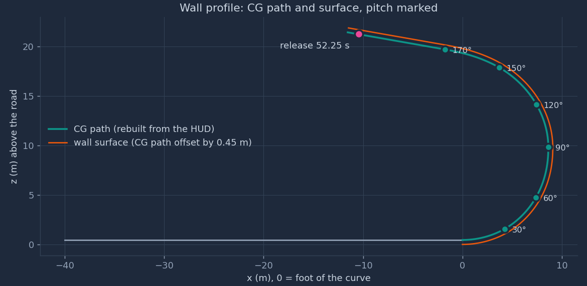
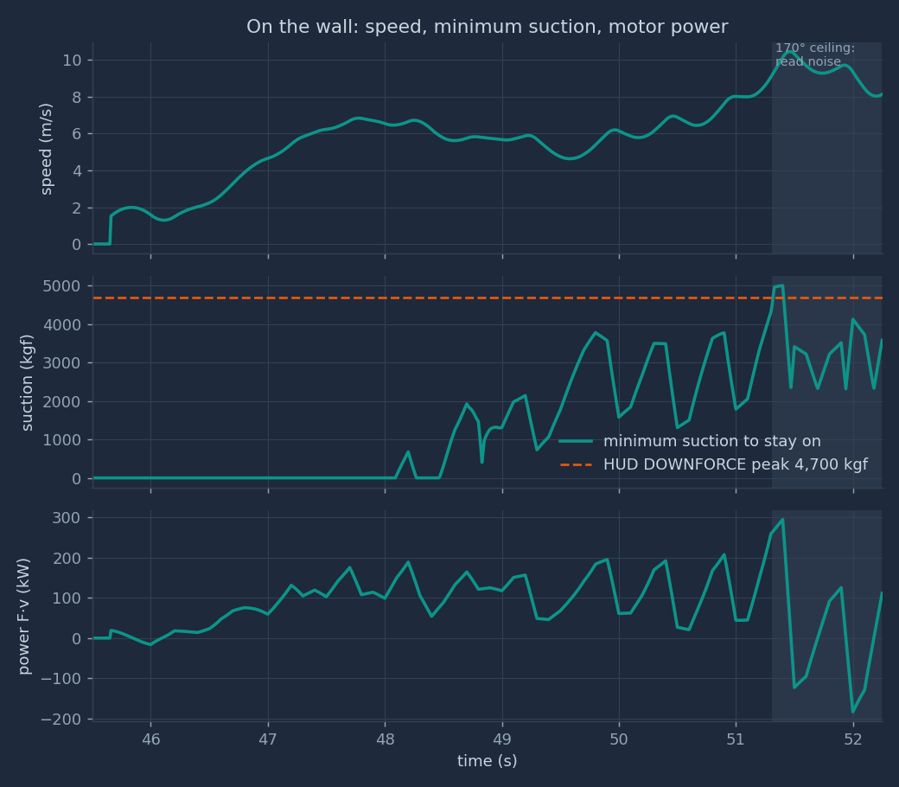
Reading Fig. 2. The speed is about 6.8 m/s in the entry curve and falls to 4.6 m/s on the overhang (49.0–50.5 s). Up to 51.0 s the minimum suction peaks at 3,779 kgf, against 4,700 kgf available: 80% of it. The median from 48.5 to 51.0 s is 1,989 kgf. Wheel power up to 51.0 s peaks at 207 kW, against more than 1,000 kW published. So suction, not motor power, limits the climb.
Why the suction curve is a saw. The swings come from the acceleration \(a = f''(t)\), not from the wall. Example: the HUD altitude jumps from 48.1 to 50.6 ft between 50.2 and 50.3 s. After the 0.30 s lag shift, \(a\) rises to 6.4 m/s² at 49.8 s and falls to −3.2 m/s² at 50.0 s. The suction need follows: 3,777 kgf, then 1,578 kgf.
The ceiling values are noise. On a 170° ceiling, one 0.1 ft altitude step is 0.176 m of track. The sim's peaks there, 5,003 kgf of suction at 51.40 s (speed 10.14 m/s, acceleration 10.62 m/s²), 294 kW and 10.46 m/s, are in this band. They are not physical results. PROJECT.html §4.1 gives the typical overhang need as about 3,300 kgf and the peak power as about 190 kW; those values were sampled every 0.5 s.
Altitude and G
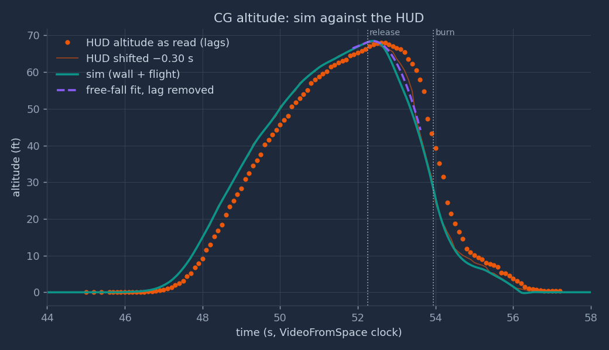
Reading Fig. 3. On the wall, the sim leads the raw HUD by the lag, by design. In flight the sim follows the shifted HUD. The largest gap is in the fall: from 53.1 to 53.4 s (lag-corrected) the sim is 5.3 to 6.3 ft below the shifted HUD.
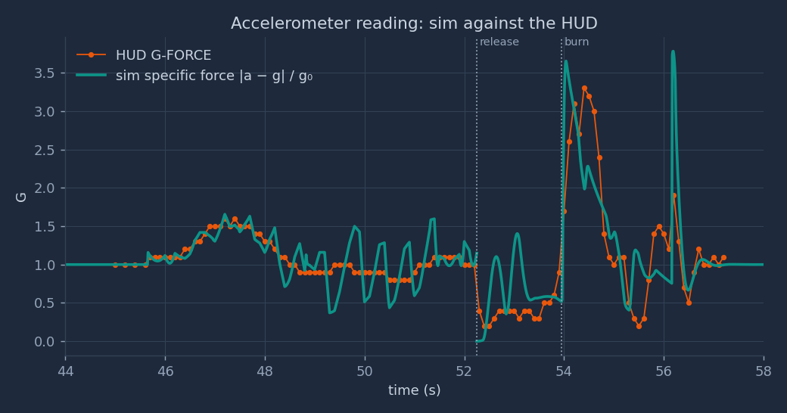
Reading Fig. 4. On the wall, the sim's G swings by about ±0.5 g around the HUD. The cause is the same acceleration noise as in Fig. 2. In free fall the sim reads 0.0 to 1.4 g; the HUD reads 0.2 to 0.6 g. The sim spikes at 52.6 s and 53.1 s are the lift pairs that start and stop the roll. Both curves rise at about 53.95 s. The sim peaks at once, 3.65 g at 54.04 s; the HUD peaks at 3.3 g at 54.4 s. The spike of 3.78 g at 56.19 s is the wheel impact at touchdown.
Tank and nozzles
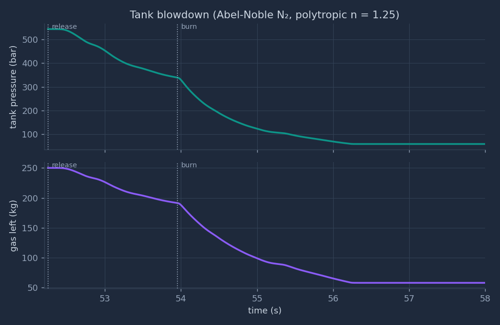
Reading Fig. 5. The run uses 76.7% of the gas (191.8 of 250 kg), but the pressure falls by 89% (543.5 to 58.6 bar). At touchdown each nozzle can give only 11.3% of its full-tank thrust.
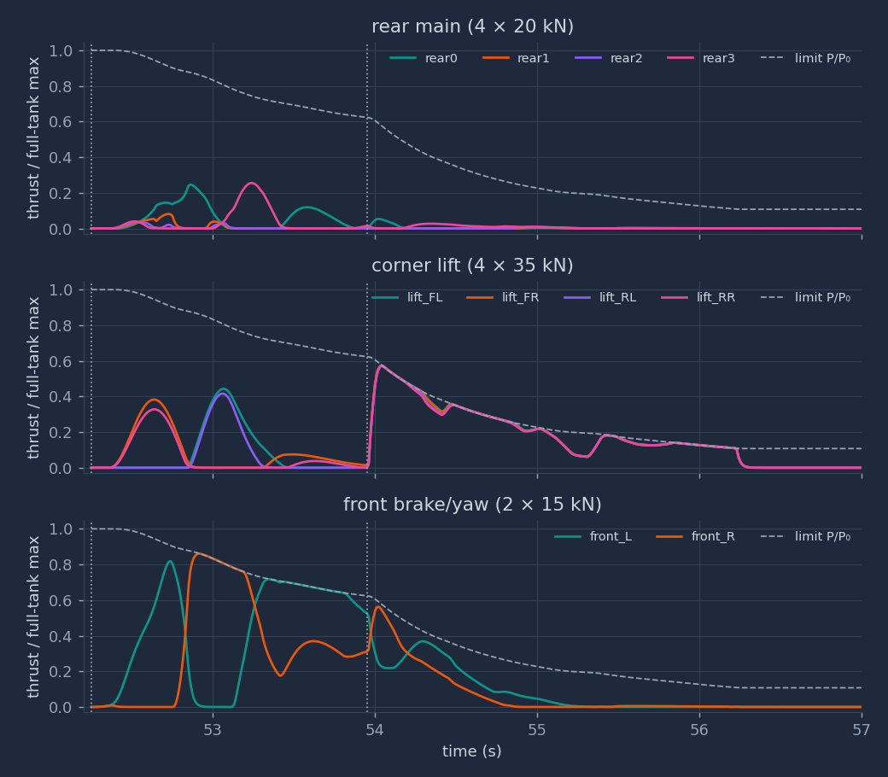
Reading Fig. 6. Before the burn, the front pair brakes the forward speed and the lift pairs make the roll: first the right pair (FR, RR), then the left pair (FL, RL) to stop it. The outer rear nozzles fire one at a time (rear0 at y = +0.45 m, rear3 at y = −0.45 m). One-sided, they give a yaw moment and some forward push. From 53.95 s the four lift nozzles run at or near the pressure limit until about 55.0 s, then below it for the hover. The burn is limited by pressure, which is why the lift nozzles had to be 35 kN each (sensitivity).
Sensitivity findings
Each row changes one input and reruns the flight (current code, same wall phase). Pass/fail uses the self-check limits: touchdown within 0.4 s of 56.30 s, altitude RMSE under 2.5 ft.
| Case | Touchdown | Alt. RMSE | Gas used | End pressure | Peak G | Check |
|---|---|---|---|---|---|---|
| n = 1.4 (no heat from the tank wall) | 55.38 s | 3.10 ft | 170.6 kg | 72.3 bar | 4.11 | fails (touchdown, RMSE) |
| n = 1.25 (used) | 56.17 s | 2.09 ft | 191.8 kg | 58.6 bar | 3.78 | passes |
| n = 1.1 (nearly isothermal) | 56.25 s | 2.03 ft | 187.8 kg | 82.9 bar | 3.89 | passes |
| First-guess nozzles: lift 4 × 20 kN, front 2 × 8 kN | 54.78 s | 4.20 ft | 115.7 kg | 192.7 bar | 9.81 | fails (touchdown, RMSE) |
short overhang (lip at the release point) | 56.17 s | 2.19 ft | 191.9 kg | 58.5 bar | 3.79 | passes (apex 68.23 ft, clearance 0.51 m) |
- Tank heat flow decides the landing. With n = 1.4 the gas cools most, the pressure and thrust fall too early, and the car lands 0.92 s early. Note that n = 1.1 uses less gas than n = 1.25 but ends at a higher pressure: warmer gas has a higher \(c^*\), so each newton costs less mass (\(\dot m = F/(C_f c^*)\)). The change log recorded 55.75 / 56.19 / 56.27 s for the three exponents before the roll-window change; the table shows the current values.
- Nozzle sizing. With the first-guess sizes the lift nozzles cannot stop the fall: the car hits the ground at 54.78 s with a 9.81 g wheel impact. The 35 kN lift size is the derived value that gives the 3.3 g burn and the hover.
- HUD lag. Without a lag model, the controller chased a gauge 0.3 s late and fought the free fall at the top. The first full run touched down at 55.17 s with a peak of 11.0 g (DEVELOPMENT-JOURNEY.html §5.3).
- Tolerance 2.0 → 2.5 ft. The altitude RMSE limit was 2.0 ft at first. At n = 1.25 the run gave 2.04 ft. The limit was raised to 2.5 ft because the pure free-fall fit to the same HUD data already leaves 1.26 ft: the gauge's 0.1 ft steps and the simple lag model set that floor. The reason is in the code at line 402. With the current code, all three exponents give more than 2.0 ft. A reader should know that the limit moved after a run failed it.
Known limits
- Planar flight (y = 0). In shot B and in the replay R1, the real car drifts to +y (screen left). The model keeps it in the plane. A two-camera triangulation of the real path failed its gate (car rms ≤ 5 px in both views; best result 76 px in R1, 50 px in B). Per the owner's rule, the sim was not refitted.
- The wall phase is kinematic. The motion on the wall is read from the HUD, not predicted. The loads inherit the gauge noise: the 5,003 kgf suction, the 294 kW power and the 10.46 m/s speed on the ceiling are artefacts. The speed also jumps from 0 to 1.52 m/s at 45.65 s, because the code sets \(v = 0\) before that time while the spline already moves.
- Overhang length. Two variants. Shot B wall-edge fits favour the
hudlength (median rms 3.09 px at +1.5 m against 3.23 px at 0 m). The image at PCMag 113.6 s (= 52.25 s) shows the car at or past the lip, which favoursshort. - G gauge timing. The model takes the G gauge as not lagged. Shot B shows the lift jets at 53.45 s, 0.5 s before the HUD G rise that sets \(T_{burn}\) = 53.95 s. Either the G gauge also lags, or the jets start before G rises.
- Constant inertia and CG. 191.8 kg of gas leaves, 8.2% of the wet mass. The mass in Newton's law falls, but the inertia and the CG position do not change.
- Simple nozzle model. \(c^*\) uses the ideal-gas choking relation at the tank temperature; the throat gas at about half the tank pressure is still dense. \(C_f\) is a constant 1.6, although the exit pressure ratio falls from about 540 to 58 during the run. One lumped tank, no pipe losses.
- No reference feed-forward for spin rate. The attitude law uses \(\boldsymbol\omega_r\) but not \(\dot{\boldsymbol\omega}_r\).
- Altitude zero. The first climb reached 69.1 ft; the flip run let go at 67.8 ft after lag correction. The altitude zero can differ by about 1.3 ft between runs.
- Gauge readings. All HUD values were read by eye: 0.1 ft and 0.1 g steps at 10 Hz (flip run) and 2 Hz (first climb).
- Roll tracking. The sim's half-roll lags its reference by about 0.1 s and overshoots upright by 34.3° (Part 4, §4.6).
- Estimates. Mass, inertia, \(C_f\), n, the gains and the nozzle positions are estimates. The lift and front nozzle sizes were derived to fit the observed flight. They are consistent with the data, not measured.
Part 4: the flip
The problem. For about one second the car does three things that no other phase of the stunt combines. It hangs upside down under a 170° ceiling, held there only by suction. It lets go. Then, in free fall, it turns 180° about its own long axis and arrives upright before the landing burn. The car has no wings and no rudder. Ten cold-gas jets that can only push, gravity and the air are the only things that can turn it. This part asks which of those forces does the work, how large each one is, and what the turn costs.
Window. From 51.31 s (the track reaches 170°, the car is inverted and the suction holds it) to 53.95 s (the landing burn starts). Before the window, the car climbs the curved overhang. After it, the burn of §8 stops the fall.
Method. Part 4 is an analysis of the existing sim, not a change to it. sim/wall_flip_sim.py and its
self-check are unchanged. Section 4.3 writes one equation set for the whole window, with every force and moment. The terms
that the sim leaves out are then evaluated along the sim's own trajectory, so that each one has a size. The script
out/physics/flip.py prints every number in this part.
4.0 Timeline and symbols
| Time (s) | Event | Source |
|---|---|---|
| 51.31 | The track reaches 170°. From here the ceiling is straight. | Wall rebuild (§1) and the lag-corrected HUD altitude |
| 52.25 | Release: the car leaves the ceiling at 8.139 m/s along the 170° line. | HUD G 1.0 → 0.4 between 52.2 and 52.3 s |
| 52.35 → 53.10 | Half-roll window: inverted → upright | Video frames at 10 fps: leaves the lip 52.3, on its side 52.6–52.7, upright 53.1 |
| 53.40 | The −10° release pitch is gone in the reference | Reference design (§8) |
| 53.95 | Landing burn starts | HUD G 0.9 → 1.7 |
Symbols added in this part:
| Symbol | Meaning | Unit |
|---|---|---|
| \(\varphi\) | Roll angle about the body \(x_b\) axis. \(\varphi = 180°\) is upside down, \(\varphi = 0\) is upright. The script reads it from the rotation matrix as \(\varphi = \operatorname{atan2}(R_{32}, R_{33})\). | rad (shown in °) |
| \(p, q, r\) | Body angular rates about \(x_b, y_b, z_b\): roll, pitch, yaw. \(\boldsymbol\omega = (p, q, r)\). | rad/s |
| \(I_{xx}, I_{yy}, I_{zz}\) | Moments of inertia: 650, 2,900, 3,200 (est.) | kg·m² |
| \(d\) | Lateral distance from the CG to the line of the lift nozzles, 0.85 m | m |
| \(T\) | Duration of the half-roll, \(t_1 - t_0 = 0.75\) s | s |
| \(F_s\), \(N\) | Suction force and surface push on the ceiling (§3) | N |
| \(\mathbf J\) | Linear impulse \(\int \mathbf F\,dt\) | N·s |
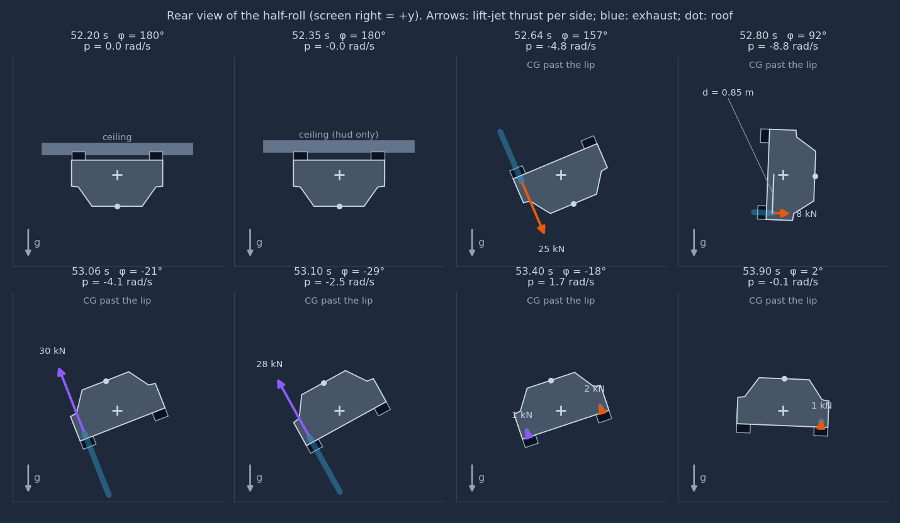
hud overhang). Screen right is \(+y\). Arrows: the thrust of the
two lift nozzles on one side (front + rear corner), drawn on the body \(z_b\) axis. Blue bands: the exhaust, opposite to the
thrust. Dot: the roof. Panels 3 and 5 are the peaks of the two thrust pulses; panel 4 is the instant \(\varphi = 90°\).4.1 Before: riding the ceiling
The force balance upside down. On the straight ceiling, the curvature is \(\kappa = 0\). The normal equation of §3 then has no centripetal term:
$$N = F_s + m g_0\cos\theta = F_s - 0.985\,m g_0 \qquad (\theta = 170°)$$The surface can only push, so \(N \ge 0\). The suction must first carry 98.5% of the weight, 2,314 kgf, before it presses the tyres on at all. The tyres must then carry the along-track load \(F_t = m a + m g_0\sin\theta + D\).
Worked case: the least suction at constant speed. Take \(a = 0\) at the release speed \(v = 8.139\) m/s. The drag is \(D = \tfrac12\rho\,(C_dA)_x v^2 = 27.8\) N, so \(F_t = 4{,}030\) N. With \(\mu = 1.1\):
$$F_{s,\min} = \frac{|F_t|}{\mu} - m g_0\cos\theta = 26{,}359\ \text{N} = 2{,}688\ \text{kgf}$$That is 57% of the 4,700 kgf that the HUD showed as the peak downforce. The ceiling values of the sim's \(F_{s,\min}\) in Fig. 2 are larger, but they come from gauge noise in \(a\) (Part 3).
No spin at the start. On the curved overhang the car pitches at \(\dot\theta = v\kappa\); its largest value from 50.0 s to 51.31 s is 38.2°/s in the sim. On the straight ceiling \(\kappa = 0\), so \(\dot\theta = 0\). A car that lets go of a straight ceiling therefore starts its flight with \(\boldsymbol\omega = 0\), which is the sim's initial condition (§4). Any turn after the release must come from a moment applied in the air.
The accelerometer cannot see the suction. While the car is attached at \(a = 0\), the non-gravity force is \((N - F_s)\,\hat{\mathbf n} + (F_t - D)\,\hat{\mathbf t} = m g_0\cos\theta\,\hat{\mathbf n} + m g_0\sin\theta\,\hat{\mathbf t}\), whose size is \(m g_0\). The G gauge reads 1.0 for any suction above the minimum. It drops only when the car leaves the surface and the contact force goes to zero. So the G step from 1.0 to 0.4 between 52.2 and 52.3 s dates the separation, not the moment the suction was switched off. The HUD reads 1.0–1.1 g from 51.3 to 52.2 s, in agreement.
sim/wall_flip_sim.py:193–194 tyre force and minimum suction; 210–213 initial flight state
4.2 Letting go: separation from the ceiling
The condition. When the suction falls below \(0.985\,mg_0 + |F_t|/\mu\), the tyres slip; when it falls below \(0.985\,mg_0\), the push \(N\) reaches zero and the car leaves. The sim models this as an instant switch at \(T_{rel} = 52.25\) s.
The gap. After release, gravity has a part \(g_0|\cos\theta| = 0.985\,g_0\) along the normal away from the ceiling and a part \(g_0\sin\theta = 0.174\,g_0\) against the motion along it. With no thrust, the gap below the plane of the ceiling grows as
$$h_{gap}(\tau) = h_0 + \tfrac12\,(0.985\,g_0)\,\tau^2, \qquad \tau = t - T_{rel}$$where \(h_0 = 0.120\) m is the distance from the body to the surface at release in the sim's box model. The free-fall part reaches 0.5 m after \(\tau = 0.322\) s. The sim's own gap, which includes the roll, is 0.170 m at 52.35 s, 0.312 m at 52.45 s and 0.485 m at 52.55 s.
How much ceiling is left. In the hud variant the wall ends 1.5 m past the nominal release point.
The smoothing spline of §2 puts the sim's car 0.392 m past that point at 52.25 s, so only 1.108 m of
ceiling is ahead of the CG. Solving \(1.108 = v\tau - \tfrac12(0.174\,g_0)\tau^2\) gives \(\tau = 0.138\) s: the CG
passes the lip at 52.388 s, when the free-fall gap is 0.092 m. The rear bumper, 2.35 m behind the CG, passes it at
52.696 s. In the short variant the lip is at the release point: the CG passes it at 52.25 s and the rear
bumper at 52.548 s. Fig. 8 shows the hud case.
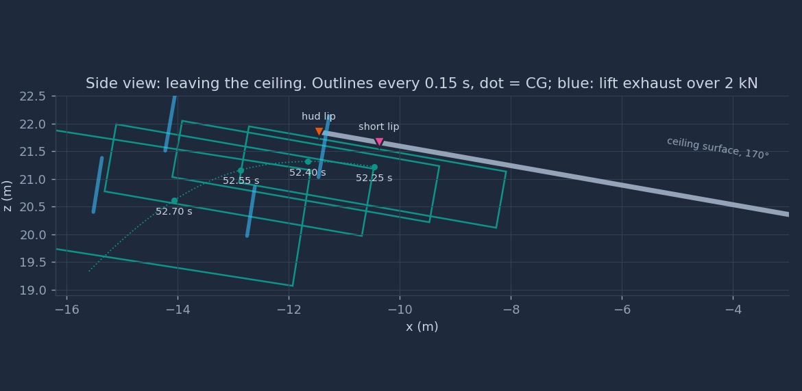
hud ceiling (§4.9).A check the self-check skips. The wall-clearance check of §11 starts 0.3 s after the release, because the car starts on the surface. Over the skipped 0.3 s, the smallest body-to-ceiling gap in the sim is 0.120 m, at 52.25 s itself. The gap only grows after that, also during the start of the roll. No contact is hidden in the skipped window.
sim/wall_flip_sim.py:48
T_RELEASE; 55 LIP_EXT; 322 clearance check starts at +0.3 s4.3 One model for the whole window
The phases before and after the release use one rigid body with one set of equations. Only the active forces change. Let \(c(t) = 1\) while the car touches the ceiling and \(c(t) = 0\) after it leaves. In world axes:
$$m\,\dot{\mathbf v} = m\mathbf g + R\bigl(B_F\,\mathbf f + \mathbf F_{aero} + \Delta\mathbf F_{jet}\bigr) + c(t)\bigl[(N - F_s)\,\hat{\mathbf n} + (F_t - D)\,\hat{\mathbf t}\bigr]$$and in body axes:
$$I\,\dot{\boldsymbol\omega} + \boldsymbol\omega\times I\boldsymbol\omega = B_M\,\mathbf f + \mathbf M_{aero} + \Delta\mathbf M_{jet} + c(t)\,\mathbf M_{contact}$$\(B_F\) and \(B_M\) are the force and moment rows of the nozzle matrix \(B\) (§5). The contact obeys the complementarity conditions
$$h_{gap} \ge 0, \qquad N \ge 0, \qquad h_{gap}\,N = 0$$that is, either the car touches and the surface pushes, or there is a gap and no push. The aerodynamic terms are
$$\mathbf F_{aero} = -\tfrac12\rho\,(C_dA)\,\lvert\mathbf v_b\rvert\,\mathbf v_b, \qquad \mathbf M_{aero} = \mathbf r_{cp}\times\mathbf F_{aero} + M_{damp}(p, V)\,\mathbf e_x$$with \(\mathbf r_{cp}\) the offset of the centre of pressure from the CG and \(M_{damp}\) the roll damping (§4.8). \(\Delta\mathbf F_{jet}\), \(\Delta\mathbf M_{jet}\) are the forces that the jets induce on the body through the surrounding air: entrainment in free air and suction near a surface (§4.9). The table lists which terms the sim contains.
| Term | In the sim? | Where its size is shown |
|---|---|---|
| Gravity, thrust \(B\mathbf f\), gyroscopic \(\boldsymbol\omega\times I\boldsymbol\omega\) | Yes | §4.4, §4.6 |
| Drag \(\mathbf F_{aero}\) on three body axes | Yes | §4.8 |
| Contact \(c(t)\): suction, surface push, traction | Before release only, as a prescribed (kinematic) path; the release is an instant switch | §4.1, §4.2 |
| Aero moment \(\mathbf r_{cp}\times\mathbf F_{aero}\) | No (\(\mathbf r_{cp} = 0\)) | §4.8 |
| Aero roll damping \(M_{damp}\) | No | §4.8 |
| Jet-induced \(\Delta\mathbf F_{jet}, \Delta\mathbf M_{jet}\) | No | §4.8, §4.9 |
| Mass and inertia change as gas leaves | Mass yes; inertia no | Known limits 5 |
sim/wall_flip_sim.py:287–296 forces, drag and the Euler step
4.4 The half-roll as a rigid-body problem
The roll equation. Take the \(x_b\) row of Euler's equation:
$$I_{xx}\,\dot p = M_x - (I_{zz} - I_{yy})\,q\,r$$The sim's peak \(|q| = 0.321\) rad/s and \(|r| = 0.279\) rad/s give a gyroscopic term of at most 15.3 N·m. That is 0.059% of the peak jet moment, so in practice \(I_{xx}\dot p = M_x\). With \(\varphi\) as defined in §4.0 and small pitch, \(\dot\varphi \approx p\).
Proof. \(\dot\varphi = -\pi S'(u)/T\) and \(\ddot\varphi = -\pi S''(u)/T^2\), with \(S'(u) = 30u^2(1-u)^2\), \(S''(u) = 60u - 180u^2 + 120u^3\) and \(S'''(u) = 60 - 360u + 360u^2\). \(S'\) is largest where \(S'' = 0\) inside \((0,1)\): \(u = \tfrac12\), \(S'(\tfrac12) = 30/16 = 15/8 = 1.875\). \(|S''|\) is largest where \(S''' = 0\): \(u = (3 \mp \sqrt3)/6\), where \(|S''| = 10\sqrt3/3 = 5.7735\). Multiply by \(\pi/T\) and \(\pi/T^2\). ∎
The moment and the thrust it needs. The moment at the peak is \(I_{xx}\,\ddot\varphi_{\max} = 650 \times 32.25 = 20.96\) kN·m. The lift nozzles push along \(z_b\) at \(y = \pm d\), so a nozzle of thrust \(f\) gives a roll moment \(\pm d f\). Two nozzles on one side give the moment with \(f = M/(2d) = 12.33\) kN each, which is 35% of their 35 kN rating. The angular impulse to reach the peak rate is \(I_{xx}\dot\varphi_{\max} = 5{,}105\) N·m·s for each half of the roll.
The estimate that sets it. \(I_{xx} = 650\) kg·m² is an estimate (Part 2). The thrust need scales with it:
| \(I_{xx}\) (kg·m²) | Peak thrust per nozzle | Pair force as specific force | Open-loop sideways speed (§4.5) |
|---|---|---|---|
| 400 | 7.59 kN | 0.66 g | 1.06 m/s |
| 650 (used) | 12.33 kN | 1.07 g | 1.72 m/s |
| 1,042 (uniform box) | 19.76 kN | 1.72 g | 2.75 m/s |
sim/wall_flip_sim.py:49 roll window; 218–220
R_ref; 37 inertia4.5 Jets that only push: the roll throws the car sideways
A wing can make a pure moment. A set of push-only jets cannot always do so. For the lift nozzles the cost is unavoidable.
Proof. \(M_x = d\,(f_{FL} + f_{RL} - f_{FR} - f_{RR})\). By the triangle inequality and \(f_i \ge 0\), \(|M_x| \le d\,(f_{FL} + f_{RL} + f_{FR} + f_{RR}) = d\,F_z\). Equality holds when one side is off. ∎
The other jets do not escape this: the rear and front nozzles push in the \(x_b y_b\) plane, and their roll arm is at most 0.034 m per newton (the front pair), which gives at most 438 N·m in the sim, 1.7% of the peak jet moment.
Where the push goes. In world axes, the body \(z_b\) axis at roll angle \(\varphi\) (pitch neglected) is \((0,\ \sin\varphi,\ \cos\varphi)\). The sim confirms it: at \(\varphi = 90°\) (52.80 s) the world \(y\) part of \(z_b\) is +0.999. During the whole roll \(0 \lt \varphi \lt \pi\), so \(\sin\varphi \gt 0\): every pulse, the one that starts the spin and the one that stops it, pushes toward \(+y\).
Proof. By Proposition 2, the least body-\(z\) force is \(I_{xx}|\ddot\varphi|/d\), and its world direction is \((0, \sin\varphi, \cos\varphi)\). The minimum-jerk curve is symmetric about the midpoint: \(S(1-u) = 1 - S(u)\), so \(\varphi(t_0 + t_1 - t) = \pi - \varphi(t)\) and \(|\ddot\varphi|\) takes the same value at \(t\) and \(t_0 + t_1 - t\). Under this reflection \(\cos\varphi\) changes sign and \(\sin\varphi\) does not. So the \(z\) integral is zero and the \(y\) integral is twice its first half. The value 4,038 N·s is the numerical integral. ∎
The size. \(J_y/m = 1.72\) m/s. Without a sideways correction, the car would drift 0.64 m by the end of the roll and 2.11 m by the burn. The vertical parts cancel: the first pulse pushes down (body \(z_b\) points down while inverted) and the second pushes up. Their magnitudes add up to 5.11 m/s of velocity change, all spent to turn the car.
What the sim does with it. The sim's controller holds \(y = 0\) (§8). Fig. 11 (bottom) shows the result: the sim's \(v_y\) still reaches +0.987 m/s at 52.96 s, the controller then pulls it back to −0.521 m/s at 53.34 s, and the largest offset is 0.333 m. The open-loop line rises to 1.72 m/s and stays there.
Link to the video. In shot B and in the replay R1, the real car drifts to \(+y\) (screen left) (Known limits 1). The model gives a mechanism with that sign, if the real car rolled the same way as the sim (roof toward \(+y\) at mid-roll). The 10 fps roll frames are too small to show the roof side, so the roll direction of the real car is not measured. The triangulation that would measure the drift failed its gate.
sim/wall_flip_sim.py:60–66 nozzle positions and directions; 267–268 sideways law \(a_y\)
4.6 What the sim's roll did
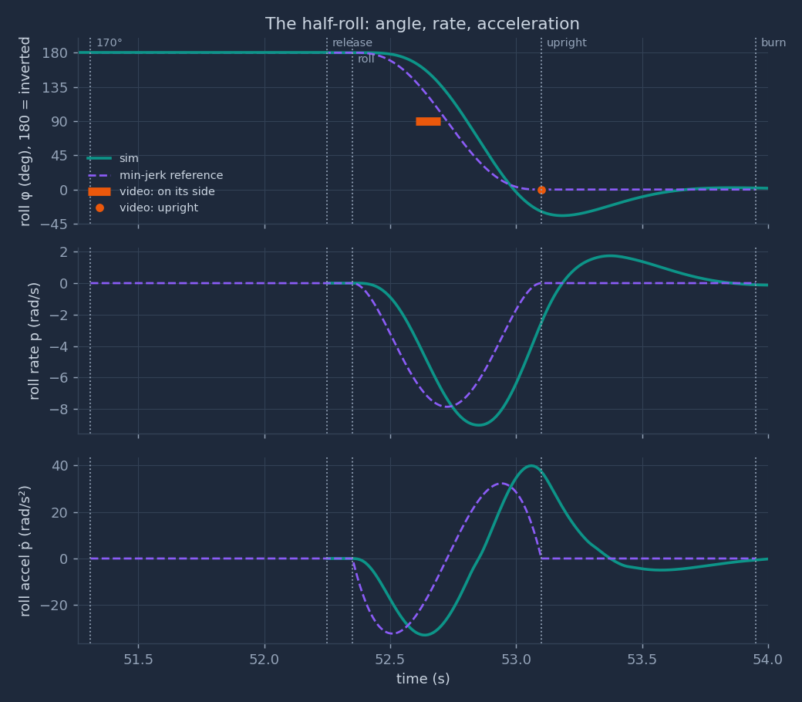
Reading Fig. 9. The reference meets the video: it passes 90° at 52.725 s and is upright at 53.10 s. The sim does not follow the reference closely. It passes 90° at 52.800 s, 0.075 s after the reference and 0.10 s after the end of the video's "on its side" interval. It passes upright at 53.00 s, overshoots to −34.3° at 53.18 s, and is still at −3.0° at 53.60 s. At 53.10 s, when the video shows the car upright, the sim is at −28.9°. Its peak roll rate is 9.02 rad/s against 7.854 rad/s, and its peak roll acceleration 39.8 rad/s² against 32.25 rad/s².
The cause. The attitude law of §8 has a natural frequency of 6 rad/s and damping 0.7, and it uses the reference rate \(\boldsymbol\omega_r\) but not the reference acceleration \(\dot{\boldsymbol\omega}_r\) (Known limits 7). The moment therefore rises only after an attitude error has built up, so the roll starts late, and the error then drives an overshoot. The valve lag of 20 ms adds to the delay. A feed-forward moment \(I\dot{\boldsymbol\omega}_r\) is the standard fix. It is not applied here, because this part does not change the sim. The landing tilt is still 0.0°.
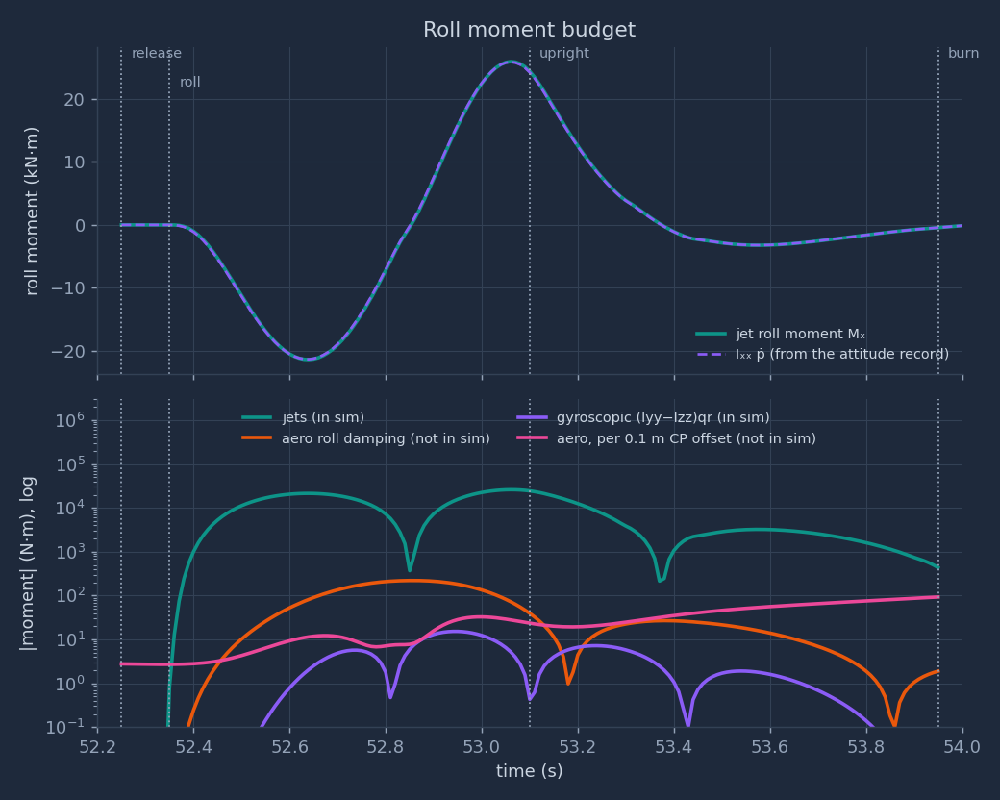
Reading Fig. 10. The jet moment peaks at 26.0 kN·m and \(I_{xx}\dot p\) at 25.9 kN·m; the two curves lie on each other. This checks that the recorded attitude obeys the roll equation with no hidden term. The first pulse (FR + RR) peaks at 24.9 kN at 52.640 s (FR 13.4 kN, RR 11.5 kN, limit 33.0 kN), at \(\varphi = 157°\). The second pulse (FL + RL) peaks at 30.1 kN at 53.060 s (FL 15.5 kN, RL 14.6 kN), at \(\varphi = -21°\), that is, after the car has already rolled past upright. The lower panel shows that the jet moment is 2 to 3 orders of magnitude larger than every other term during the roll.
sim/wall_flip_sim.py:277 attitude law; 46 valve lag
4.7 The G gauge during the roll
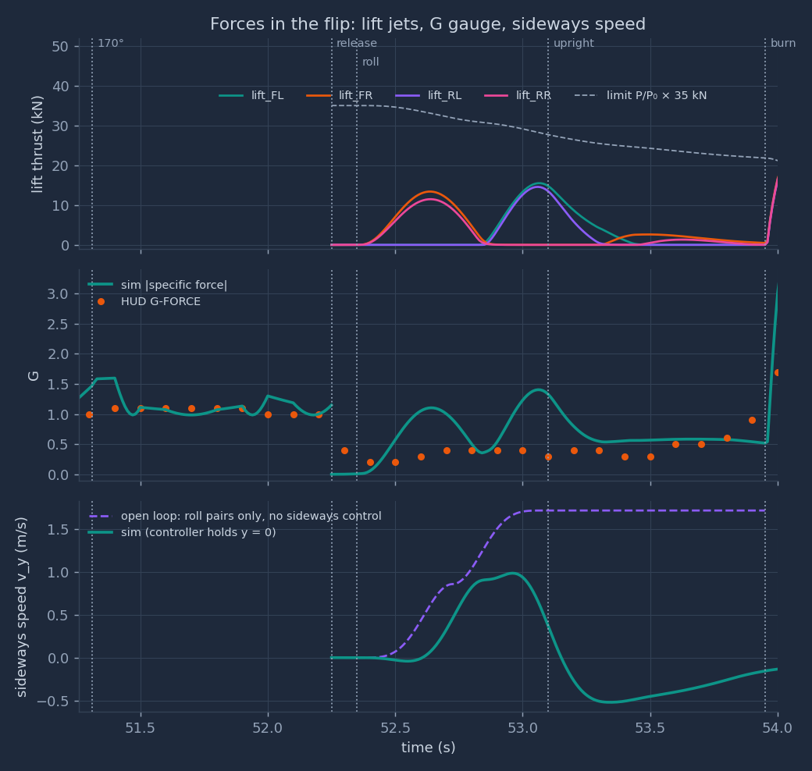
Fig. 11 (middle) shows a clear difference. During the roll, 52.35–53.10 s, the HUD shows 0.2–0.4 g; the sim shows 0.00–1.40 g. The roll pulses cause the sim's two humps.
Proof. The rate starts and ends at zero, so it rises to some peak \(\dot\varphi_{pk}\) and falls back. Let \(\alpha = \max|\ddot\varphi|\). The rate cannot exceed \(\alpha t\) from the start or \(\alpha(T - t)\) from the end, so the angle turned is at most \(\int_0^T \alpha\min(t, T-t)\,dt = \alpha T^2/4\). It must equal \(\pi\), so \(\alpha \ge 4\pi/T^2\). By Proposition 2 the lift-jet force along \(z_b\) is then at least \(I_{xx}\alpha/d\) at that instant. The other jets push in the \(x_b y_b\) plane, which is perpendicular to \(z_b\), so they cannot reduce the size of the specific force. Hence \(G_{\max}\,g_0 \ge I_{xx}\alpha/(m d)\). Drag along \(z_b\) is at most 327 N in the roll, 1.4% of the weight; the bound neglects it. ∎
The numbers. With \(G_{\max} = 0.4\), \(T = 0.75\) s: \(I_{xx} \le 351\) kg·m². If the roll took \(T = 0.85\) s (one more video frame), \(I_{xx} \le 451\) kg·m². For the minimum-jerk shape itself, the bound is 243 kg·m². The estimate is 650 kg·m², and a uniform box of the car's size and mass gives 1,042 kg·m². So at least one of these is true:
- The G gauge does not show the unfiltered specific force. It may be filtered or averaged. The HUD altitude is already known to lag by 0.30 s (§10).
- The roll inertia is at most about half of the estimate (351 / 650 = 54%).
- Part of the roll comes from something other than the lift jets, for example a moment applied before the car leaves the ceiling.
An example of the third case: if one side's suction let go first, the still-attached wheel line would act as a hinge. Gravity's normal part about that line, \(0.985\,mg_0 \times d = 19.3\) kN·m, would then start the roll with \(8.22\) rad/s² (inertia about the hinge 2,348 kg·m²) and no jet force. The record has no evidence for or against this.
Computed in
out/physics/flip.py (HUD readings from data/hud_wall_flip.csv)4.8 Aerodynamics along the sim's path
Dynamic pressure. The airspeed is 8.13 m/s at release and 14.10 m/s at the burn. So \(q = \tfrac12\rho V^2\) goes from 39.6 Pa to 119.2 Pa. For scale, the car's weight spread over its 9.40 m² plan area is 2,452 Pa. The air is weak during the flip.
Drag (in the sim). The largest drag force in the window is 929 N, 4.03% of the weight, at the burn, when the car falls fastest. During the roll the drag is at most 327 N.
Roll damping (not in the sim). A rolling car moves its floor, roof and sides through the air. Two simple models bound the moment.
- Cross-flow. A strip of the plan at lateral position \(y\) moves at \(p\,y\) normal to itself and feels a pressure \(\tfrac12\rho\,C_{D}\,(py)^2\). The moment of all strips is
since \(\int_{-a}^{a} y^2|y|\,dy = a^4/2\). The drag coefficients come from the sim's own drag areas: \(C_{Dz} = 8.0/(L W) = 0.851\) and \(C_{Dy} = 2.0/(L H) = 0.370\). This gives \(M_{cf} = 1.257\,p|p|\) N·m.
- Slender wing. In the forward flow \(V\), a strip at \(y\) sees an angle of attack \(py/V\). Slender-wing theory gives a lift slope \(C_{L\alpha} = \pi A/2\) with aspect ratio \(A = W/L = 0.426\), so \(C_{L\alpha} = 0.668\). The moment is
On the sim's path the peaks are 102 N·m and 119 N·m: 0.39% and 0.46% of the peak jet moment. If no controller corrected it, the sum of the two would change the roll angle by 2.51° over the roll. The two constants are equal by coincidence of the numbers, not by a physical rule.
Centre-of-pressure offset (not in the sim). The sim puts the aerodynamic force at the CG. Each 0.1 m of offset adds a moment of \(0.1\,|\mathbf F_{aero}|\): at most 93 N·m in the window, 0.36% of the jet peak, or 0.032 rad/s² in pitch.
Jet-induced lift loss in free air (not in the sim). A jet drags the nearby air with it, which lowers the pressure on the body around the nozzle. Kuhn, Bellavia, Corsiglia and Wardwell (NASA TM 102268, 1991, p. 5) give, for open air,
$$\frac{\Delta L_\infty}{T} = K_\infty\sqrt{\frac{S}{A_j}}\left(\frac{\Sigma\pi d}{d_e}\right)^{1.58}\mathrm{NPR}^{-0.5}, \qquad K_\infty = -0.00010$$with \(S\) the plan area, \(A_j\) the total jet area, \(\Sigma\pi d\) the total jet perimeter, \(d_e\) the diameter of one jet with the total area, and NPR the nozzle pressure ratio. For one active pair (two jets), \(\Sigma\pi d/d_e = \sqrt2\,\pi\). The jet diameter is not known. The throat is 22.6 mm; ideal expansion from NPR 536 to 1 bar gives an exit Mach number of 5.01, an area ratio of 25.2 and an exit of 114 mm. The result is \(\Delta L_\infty/T = -0.10\%\) to \(-0.55\%\), at most 131 N on a 24 kN pair. The suckdown data in the 1985 survey were taken at NPR 1.45–2.4 (NASA TM 86825, Figs. 3 and 9); here the NPR is 435–536, 180 to 370 times larger. Take the value as an order of magnitude only.
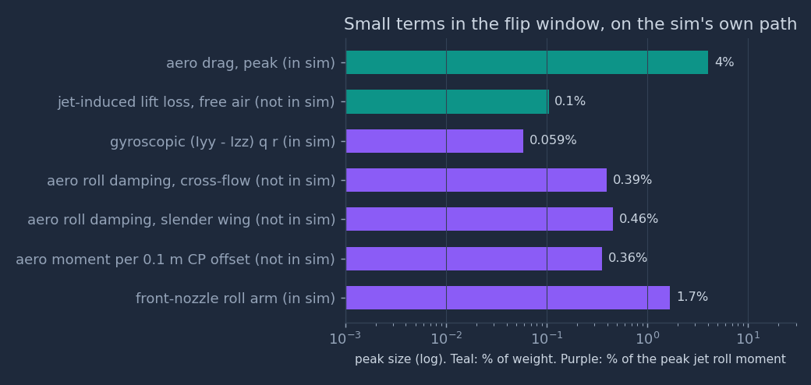
sim/wall_flip_sim.py:43 drag areas; 290 drag force
4.9 The jets and the ceiling
Where the exhaust goes. The lift nozzles push along \(+z_b\), so their exhaust leaves along \(-z_b\). Upside down,
\(-z_b\) points up, at the ceiling. The sim's first lift thrust above 0.5 kN comes at 52.400 s, when the CG is at
\(x = -11.66\) m, already 0.2 m past the hud lip (\(x = -11.46\) m). The rear nozzles are 1.4 m behind the CG,
so the rear right nozzle (RR) is still under the ceiling.
The geometry in the sim. In the hud variant, the axis of the RR exhaust meets the ceiling from 52.40
to 52.56 s, at 0.36–0.87 m from the nozzle, with up to 9.5 kN of thrust. In the short variant it meets the
ceiling only from 52.40 to 52.42 s, with at most 1.2 kN. No other lift nozzle points at the ceiling while it fires.
The physics. A jet that hits a nearby surface spreads along it as a wall jet. The wall jet drags air out of the gap between the body and the surface, and the low pressure in the gap pulls the body toward the surface ("suckdown"). Here the surface is the ceiling, so the pull is upward, against the RR thrust, which pushes the car down and starts the roll. The pull therefore reduces both the push and the roll moment of RR. For a single jet in hover over a large ground board, Wyatt's correlation (Kuhn and Eshleman, NASA TM 86825, 1985, Fig. 2) is
$$\frac{\Delta L}{T} = -0.012\left(\frac{h}{D - d}\right)^{-2.3}$$where \(h\) is the height of the plan surface above the ground, \(D\) the effective diameter of the plan, and \(d\) the jet diameter. Its plotted data span \(h/(D - d) \approx 0.17\) to 1.5. For the car, \(D \approx 3.46\) m (circle of equal area) and \(d = 0.114\) m, so the range is \(h = 0.57\) to 5.02 m. At \(h = 0.57\) m, the correlation gives a loss of 70% of the jet thrust. The real gap during the event is 0.12 to 0.49 m, below the fitted range, where the formula gives more than 100%. The correlation cannot give a size here, for three reasons:
- It is for a hovering body over a still surface. Here the car slides along the ceiling at 8 m/s and falls away from it.
- It is for a large ground board. The ceiling is 3.3 m wide, less than the plan diameter of 3.46 m, and it ends at the lip, 1.22 m from the RR nozzle at 52.40 s.
- The gap is below the fitted range, and the NPR (435–536) is 180 to 370 times the 1.45–2.4 of the survey's data.
A scale for the effect. At the bottom of its range the correlation gives 70% of the thrust, and at
\(h = 0.49\) m it gives 100%. So take full cancellation of the RR thrust as the scale: while its axis meets the ceiling,
the RR impulse is 769 N·s, or 0.327 m/s of speed. Its roll part is 654 N·m·s, 12.8% of the angular impulse of one half of the roll. This
is the only aerodynamic term in the window that could matter at the 10% level, and it is the only one that depends on
the overhang variant: the hud ceiling exposes it for 0.16 s, the short ceiling for 0.02 s.
Computed in
out/physics/flip.py; ceiling geometry from sim/wall_flip_sim.py:314–3204.10 After: into the burn, and what the model captures
Into the burn. By 53.40 s the release pitch of −10° is gone in the reference (the sim shows +0.87°). At 53.90 s the sim is upright within 2°. From release to the burn, the jets use 58.6 kg of gas. By thrust impulse, the front pair (braking and yaw) takes 48%, the lift nozzles (the roll and its correction) 42%, and the rear nozzles 10%. At 53.95 s the four lift nozzles open together for the burn of §8.
What the model captures.
- The inverted force balance on the ceiling and the reason the G gauge marks the separation (§4.1).
- The fall away from the ceiling and the time left under it, for both overhang variants (§4.2).
- The rigid-body roll: the moment, the thrust it needs, and its dependence on \(I_{xx}\) (§4.4).
- The coupling that push-only jets force between turning and translating, with a sideways push toward \(+y\) (§4.5).
- The size of every aerodynamic term on the sim's own path (§4.8).
What it misses, and where it is discussed.
- The sim's roll lags its reference by about 0.1 s and overshoots by 34.3° (§4.6). A feed-forward term would repair it; the sim is unchanged by request.
- The G gauge during the roll does not agree with a jet-only roll at the estimated inertia (§4.7).
- The release is an instant switch; the suction decay and any one-sided release are not modelled (§4.2, §4.7).
- The flight is planar (\(y = 0\) is enforced by the controller), so the sideways push is removed, not predicted (§4.5).
- The jet-ceiling interaction has a scale, not a value (§4.9).
Reproduce
python sim/wall_flip_sim.py — runs both phases in about 3 s, prints the report, writes
out/replay_data.js and runs the self-check. Add short for the short overhang (this also rewrites
out/replay_data.js).
python out/physics/make_charts.py — about 30 s. Imports the sim module (the same code and data that write
out/replay_data.js), prints every derived number on this page, the free-fall fit and the sensitivity table,
and writes the six PNG charts in out/physics/.
python out/physics/flip.py — about 5 s. Part 4: imports the sim module without changing it, prints every
number of Part 4 and writes the six flip_*.png figures.
Charts: matplotlib; colours checked for colour-blind separation on the dark card colour. Math: KaTeX 0.16.9 (needs internet).